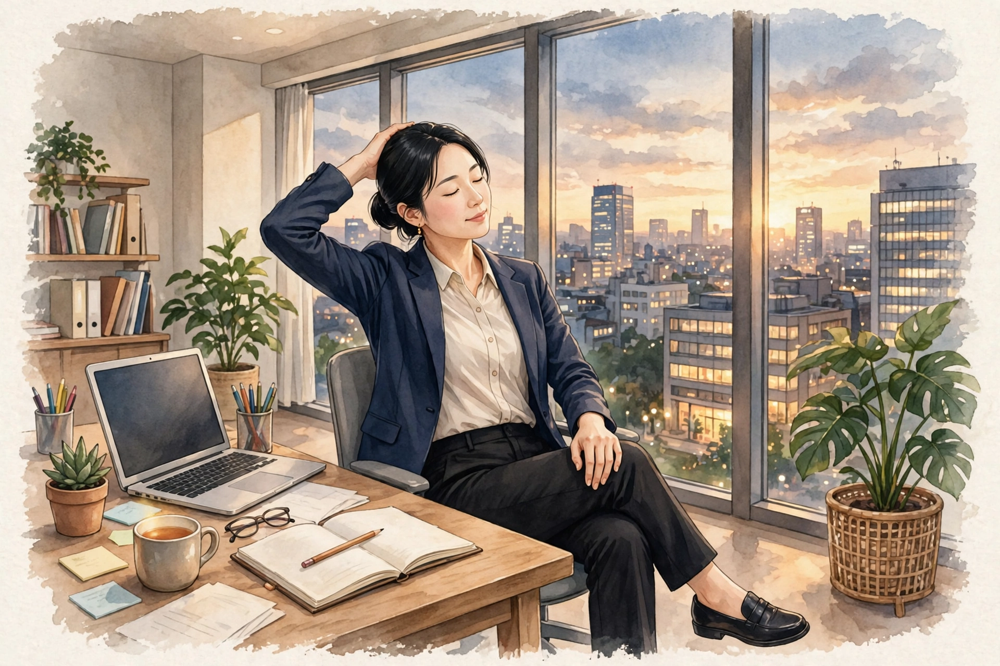

梅田でデスクワーク後に気になる首こり｜要因の整理とセルフケア、受診の目安ハウツー

梅田で働く・暮らす方へ。デスクワークを終えた夕方に「首の後ろがこわばって、横を向きにくい」「画面を見続けていた日は、首から肩にかけて重さを感じる」「休みの日は気にならないのに、仕事の日だけ首こりが気になる」と感じる首こりについて、一般的な解説と考えられる要因の整理、デスクワークの合間に取り入れられるセルフケア、医療機関への受診の目安をまとめました。一般的な健康情報としてお読みください。
#梅田 デスクワーク 首こり#デスクワーク後 首こり#首こり セルフケア デスクワーク#梅田 女性専用 サロン 首#首こり 画面時間
デスクワーク後に気になる首こりとは（一般的な解説）
首こりとは、病名ではなく、「首の後ろがこわばる」「首を横に向けにくい」「首から肩にかけて重さを感じる」といった感覚を表す言葉として使われることがあります。デスクワークの後に気になる場合は、朝は平気でも画面の前に長く座っていた日の夕方に気づく、休みの日は気にならないのに仕事の日だけ首まわりが気になる、といった形で感じる方が多いとされます。感じ方には個人差が大きく、その日の作業量や姿勢、眠りの様子によっても変わるとされます。
大切なのは、「仕事の日と休みの日でどう違うか」「どんな作業の日に気になりやすいか」という視点です。画面を見続けた時間が長かった日なのか、同じ姿勢で座り続けた日なのか、冷房の風が首に当たる席だった日なのか、眠りが浅かった日の翌日なのか——気になりやすい場面を簡単に記録しておくと、自分の傾向がつかみやすくなります。この記事では、デスクワーク後に気になる首こりの一般的な解説と、背景として考えられる要因の整理からお伝えします。なお、こりの感じ方だけで体の状態を判断することはできません。気になる変化が続く場合は、後半の「受診の目安」もあわせてご確認ください。
考えられる要因の整理
1つ目は、画面の高さや距離、座る姿勢との関わりです。画面が目線より低かったり、キーボードに手を伸ばす姿勢が続いたりすると、頭が前に出た姿勢や、首の後ろ側が長く支える姿勢になりやすいとされます。ノートパソコンを低い位置で使い続けると、うつむき気味の姿勢が続き、首や肩まわりの負担につながると考えられます。ただし、感じ方には個人差があり、「姿勢が原因」と一言で決めつけられるものではありません。
2つ目は、同じ姿勢が長く続くことや、首まわりの冷えとの関わりです。集中していると、気づかないうちに1〜2時間、首をほとんど動かさないまま過ごしてしまうこともあります。動かす機会の少ない首まわりは、夕方にこわばりを感じやすい部位のひとつとされます。冷房の風が直接首に当たる席や、薄着のまま冷えた室内で過ごす日は、首まわりの冷えも重なると考えられます。東洋医学では、首は気血の通り道として大切にされる部位で、首の後ろ側を流れる膀胱経や、側頭から首の側面を巡る胆経のエリアともあわせて考えられてきました。
3つ目は、作業の緊張や睡眠、生活リズムとの関わりです。締め切りや会議が続く日は、知らないうちに肩や顎まわりに力が入り、首まわりもこわばりやすくなるとされます。眠りが浅かった翌日や、就寝・起床の時刻が大きくずれた日と重なることもあります。要因はひとつではなく、その日の作業内容や姿勢、眠りの様子によって組み合わせが変わるため、思い当たるものをひとつずつ見直すことが大切です。
デスクワークの合間に取り入れられるセルフケア
まずは「区切りをつくって、首を動かす機会を増やす」ことです。1時間に一度、画面から目を離して立ち上がり、首をゆっくり横に向けたり、肩を回したりする時間を設ける方法が挙げられます。首を動かすときは、痛みを感じるほど強く動かす必要はありません。うつむき気味の姿勢が続いたと感じたら、顎を軽く引いて頭の位置を見直す、画面の高さを目線に近づける、キーボードと体の距離を調整するといった、机まわりの見直しも取り入れやすいものです。
次に「温めて、首まわりをいたわる」ことです。帰宅後に湯船につかって首まわりまで温める、蒸しタオルを首の後ろに当てる、といった方法は、冷えてこわばった部位をいたわる基本とされます。冷房の風が当たる席では、薄手のストールや羽織るものを用意しておく工夫も、冷えを感じやすい方には取り入れやすいものです。あわせて、首の横倒しストレッチや、肩甲骨を寄せる動きなど、仕事や家事の合間に取り入れやすい動きも挙げられます。強く倒したり、痛みを感じるほど伸ばしたりする必要はありません。
あわせて、水分をこまめに取ること、温かい飲み物を一日のどこかに挟むこと、就寝・起床の時刻を大きくずらさないことも、デスクワークの日の体調管理の基本とされます。ただし、セルフケアはあくまで日常のこり感への対処です。特定の方法に頼りすぎたり、気になる状態を我慢して様子を見続けたりしないようにしてください。こり感が強い日は、ケアよりもまず体を休めることを優先することも大切です。
受診の目安｜こんなときは医療機関へ
デスクワーク後の首こりの多くは、画面の高さや姿勢、同じ姿勢の長さ、緊張や睡眠といった日常の要素が重なって感じられるとされますが、中には医療機関での確認を優先したいサインもあります。「手や指のしびれ、力が入りにくい感じを伴う」「首や肩を動かせないほど強い痛みがある、痛みが少しずつ強くなっている」「腕が上がりにくい、首を動かせる範囲が狭くなってきた状態が続く」「発熱を伴う」「転んだりぶつけたりしたあとから気になり始めた」「夜間の痛みで眠りが妨げられる日が続く」「日常生活や仕事、家事に支障が出るほどつらい状態が続いている」といった場合は、セルフケアで様子を見続けず、整形外科など医療機関への受診をおすすめします。
また、首こりの背景には、検査で初めて分かる要素が関係していることもあるため、気になる状態が続く場合は一度相談してみてください。当店のケアはリラクゼーションを目的としたボディケアで、首の状態や病気を診断したり、それらに対応したりするものではありません。医療機関での確認を優先したうえで、日常のケアの選択肢のひとつとしてご利用ください。
当店でのケアとサロンのご案内
ステラポラリスは、大阪・梅田エリアのレンタルサロンで施術する女性専用・完全予約制のサロンです。営業は月〜土17:00〜22:00（日曜休み）で、仕事帰りや家事を終えたあとの時間帯にも合わせやすい設定です。施術はオイルマッサージと美容整体、料金は90分10,000円です。ご予約はLINE公式アカウント「ポラリス美容整体院」で受付中です。場所は大阪市北区堂山町12-5 ロイヤルハイツ梅田Ⅱ 303号室（レンタルサロンACE内）、中崎町駅から徒歩5分・阪急梅田駅から徒歩8分です。入室方法の詳細はご予約確定後にLINEでご案内します。
施術では、その日の体調や気になる部位をうかがい、首・肩から背中を含めた全身を順にほぐしながら、巡りを意識したケアを組み立てます。美容整体では、姿勢の土台となる骨盤まわりや肩甲骨まわりのケアを組み合わせることもできますので、ご希望があればお伝えください。デスクワークの後に首まわりが重く感じられる日は、静かに休む時間を大切にする進め方も選べますので、遠慮なくお伝えください。担当は施術歴30年・鍼灸師資格を持つセラピスト1名で、当店では鍼灸施術は行いません。関連するお悩みページ「首こり」「肩こり」や、経絡ページ「膀胱経」「胆経」でも、体の見方やケアの考え方を紹介していますので、あわせてご覧ください。料金や営業時間の詳細は、メニュー・料金ページでもご確認いただけます。